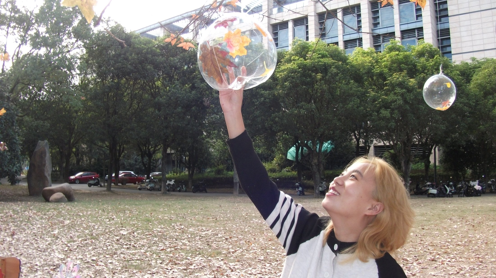
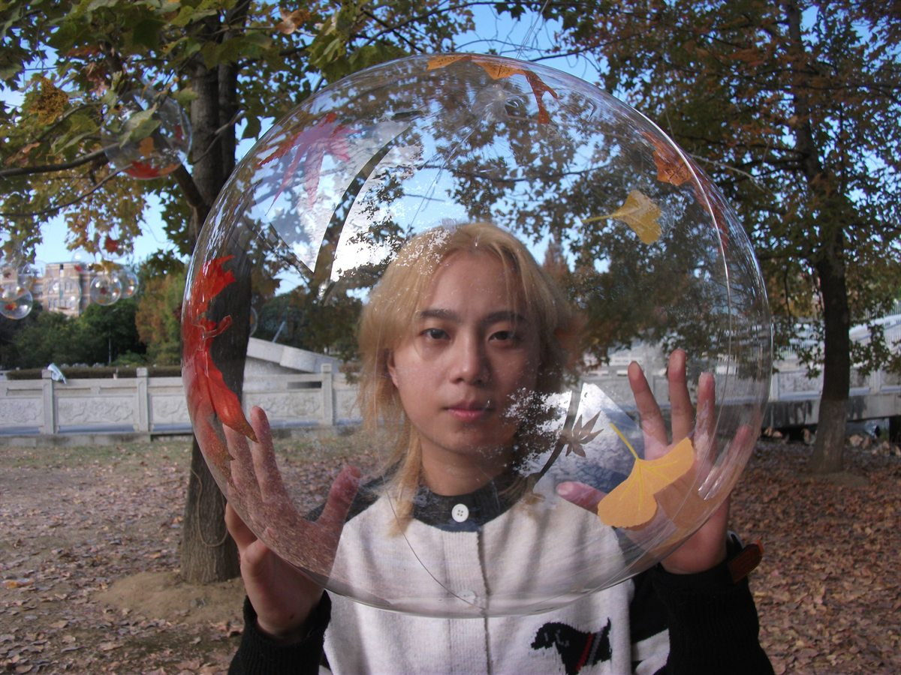
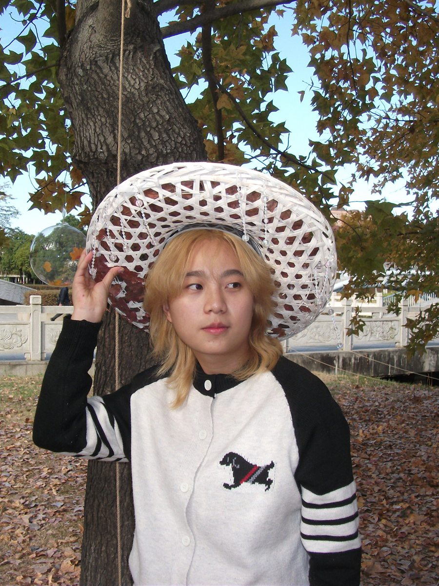
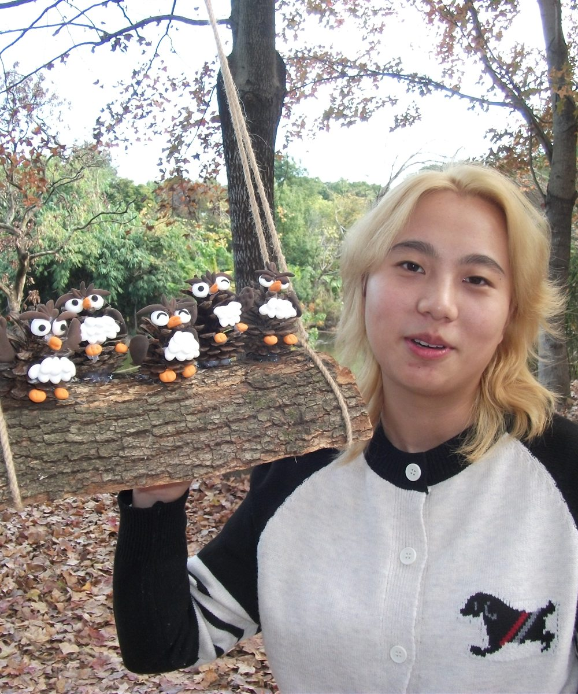

Published / Xiaohongshu
福大宿舍，居然有电梯
从学校生活里抓出一点新鲜感。它不是宏大的作品，但很像我想保存的那种日常：真实、好奇、突然开心。

一个二十岁的女生，
和她正在发芽的很多梦想。
Current Focus
Niks East 不只是一个作品列表。它也会介绍我是谁：喜欢枫叶、树林、秋天，喜欢把生活里很轻的瞬间拍下来，再让它们变成可以被看见的东西。
About Niks
二十岁，有很多梦想。我的影像常常从很普通的地方开始：学校的一条路、树下的一阵风、旅行里的海、或者一次突然想留下来的光。
我希望这个网站慢慢长成一个个人介绍页，也是一间可以持续更新的作品房间。



Interactive Study
我喜欢那种看起来快要沉下去的东西，忽然又被光照到，重新长出一点新意。
Cosmos Mode
如果枫叶树林是我脚下的地方，那土星就是我望向远处时最喜欢的星球。它冷、远、安静，又像一枚悬在黑暗里的戒指。
Selected Works
Published / Xiaohongshu
从学校生活里抓出一点新鲜感。它不是宏大的作品，但很像我想保存的那种日常：真实、好奇、突然开心。
Published / Campus
社团体验系列的第一条。一个人也可以把校园走成地图，把无聊剪成入口。
Open LinkFlow Map
学校、树林、海边、路上，先让感受进入镜头。
把本地素材、已发布链接和还没命名的片段慢慢归档。
先放出能看的，再把每个作品做成更完整的页面。
Resume
这里会放更正式的一面：简历、介绍视频，以及以后可以继续补充的经历、技能和合作信息。
Contact